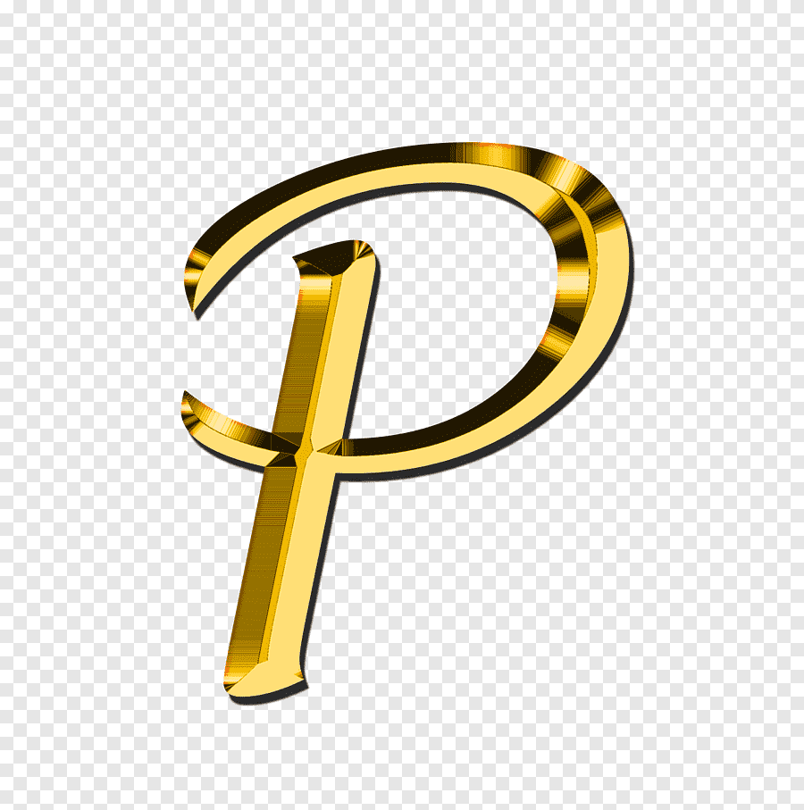
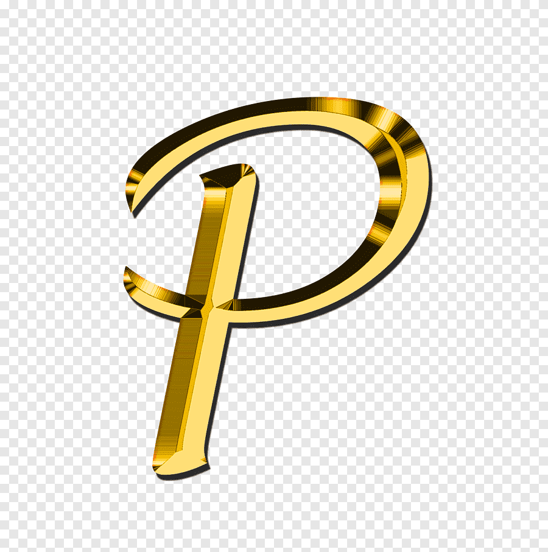

English
English


 

üì± Add to Home Screen with Custom Icons - Complete Implementation Guide
Have you ever wondered how some websites appear like native apps on your mobile home screen with beautiful custom icons? In this comprehensive guide, I'll show you exactly how to implement this feature for your web application. This works for both iOS (iPhone/iPad) and Android devices, giving your users a native app-like experience without the need for app stores!
✨ What You'll Achieve
üìñ What is "Add to Home Screen"?
"Add to Home Screen" is a powerful feature that allows users to save your website as a shortcut on their mobile device's home screen, just like a native app. This provides several key benefits:
- Easy Access: Users can open your website with just one tap
- Professional Look: Shows your custom icon instead of a generic website screenshot
- Better User Engagement: Acts and feels like a native application
- No App Store Required: Works directly from the browser - no submission, no fees!
How Users Add Your Site to Home Screen:
üì± On iPhone/iPad:
- Open your website in Safari
- Tap the Share button (square with arrow)
- Scroll and tap "Add to Home Screen"
- Tap "Add"
ü§ñ On Android:
- Open your website in Chrome
- Tap the three-dot menu (⋮)
- Tap "Add to Home screen"
- Tap "Add"
üöÄ Step-by-Step Implementation
Follow these simple steps to add this feature to your website. Don't worry - it's easier than you think!
1Prepare Your Icon
First, you'll need an icon file for your application. Here are the specifications:
- Format: PNG with transparent background (recommended)
- Minimum Size: 192x192 pixels
- Recommended Size: 512x512 pixels for best quality
- File Name: Any name (e.g.,
app-icon.png,logo.png)
Save your icon in your project's image directory, for example: assets/img/app-icon.png
2Create the Web App Manifest File
Create a file named manifest.json in your root directory (the same folder where your
index.html file is located).
{
"name": "Your Application Full Name",
"short_name": "App Name",
"description": "Brief description of your application",
"start_url": "/",
"display": "standalone",
"background_color": "#ffffff",
"theme_color": "#0066cc",
"orientation": "portrait-primary",
"icons": [
{
"src": "assets/img/app-icon.png",
"sizes": "192x192",
"type": "image/png",
"purpose": "any maskable"
},
{
"src": "assets/img/app-icon.png",
"sizes": "512x512",
"type": "image/png",
"purpose": "any maskable"
}
]
}
üìù Understanding Each Field:
| Field | Description | Example |
|---|---|---|
name |
Full application name (shown during installation) | "E Pabitra Portfolio" |
short_name |
Short name (shown under icon on home screen) | "Pabitra" |
description |
Brief description of your app | "Java Developer Portfolio" |
start_url |
Where the app opens (usually "/" for homepage) | "/" |
display |
How the app displays ("standalone" hides browser UI) | "standalone" |
background_color |
Background color of splash screen | "#ffffff" |
theme_color |
Theme color for browser/status bar | "#0066cc" |
short_name under 12 characters for the best display on mobile home screens.
Choose a theme color that matches your brand identity!
3Update Your HTML Files
Add the following code to every HTML page in your website, inside the <head> section.
Place this code after your existing favicon link.
<!-- Apple Touch Icons for iOS Add to Home Screen --> <link rel="apple-touch-icon" href="assets/img/app-icon.png" /> <link rel="apple-touch-icon" sizes="152x152" href="assets/img/app-icon.png" /> <link rel="apple-touch-icon" sizes="180x180" href="assets/img/app-icon.png" /> <link rel="apple-touch-icon" sizes="167x167" href="assets/img/app-icon.png" /> <!-- Web App Manifest --> <link rel="manifest" href="manifest.json" /> <!-- PWA and iOS Meta Tags --> <meta name="theme-color" content="#0066cc" /> <meta name="apple-mobile-web-app-capable" content="yes" /> <meta name="apple-mobile-web-app-status-bar-style" content="black-translucent" /> <meta name="apple-mobile-web-app-title" content="YourAppName" />
üîÑ Important Reminders:
- Update ALL your HTML pages (index.html, about.html, contact.html, etc.)
- Change the icon path if your icon is in a different location
- Update the app title in
apple-mobile-web-app-titleto match your app name - Make sure the
theme-colormatches your manifest.json
"The key to a great 'Add to Home Screen' experience is consistency. Make sure all your HTML pages have the same meta tags and your icon represents your brand well. A simple, clear icon works better than a complex one when displayed at small sizes on mobile screens."
Best Practice Tip
üé® Icon Design Best Practices
Your icon is the face of your web app on users' home screens. Here's how to make it perfect:
✅ DO:
- Use simple, clear designs that are easily recognizable
- Ensure good contrast between elements
- Use transparent background (PNG format)
- Test how it looks at small sizes (icons appear tiny on phone screens)
- Use square images with 1:1 ratio
❌ DON'T:
- Add text to icons (it becomes hard to read when small)
- Use complex gradients that may not render well
- Use very thin lines that won't be visible at small sizes
- Use photos instead of logos or simple graphics
üìè Recommended Icon Sizes
For the best quality across all devices, consider creating icons in these sizes:
| Size | Device | Purpose |
|---|---|---|
| 180x180 | iPhone | Primary iOS icon |
| 152x152 | iPad | iPad icon |
| 167x167 | iPad Pro | iPad Pro icon |
| 192x192 | Android | PWA icon (minimum) |
| 512x512 | All devices | PWA icon (high-resolution) |
üõ†Ô∏è Free Tools to Create/Resize Icons
- Canva (canva.com) - Free online design tool, great for beginners
- Photopea (photopea.com) - Free online Photoshop alternative
- GIMP (gimp.org) - Free desktop software for advanced editing
- favicon.io - Generate icons from text or images automatically
- RealFaviconGenerator (realfavicongenerator.net) - Generate all sizes at once
üß™ Testing Your Implementation
Testing is crucial to ensure everything works perfectly. Here's how to test on different platforms:
Desktop Testing (Start Here)
- Open your website in Chrome or Edge
- Press
F12to open Developer Tools - Go to the Application tab
- Click Manifest in the left sidebar
- Verify all fields are correct and icons load properly
- Check the Console tab for any errors
Mobile Testing - iPhone
- Open your website in Safari (not Chrome!)
- Tap the Share button
- Tap "Add to Home Screen"
- Verify your custom icon appears (not a screenshot)
- Verify the app name is correct
- Tap "Add" and check the home screen
- Tap the icon to ensure it opens in standalone mode (no Safari UI)
Mobile Testing - Android
- Open your website in Chrome
- Tap the three-dot menu (⋮)
- Tap "Add to Home screen"
- Verify your custom icon appears
- Tap "Add" and check the home screen
- Open the app and verify standalone mode works
üîß Troubleshooting Common Issues
Running into problems? Here are solutions to the most common issues:
Issue 1: Icon Not Appearing
Problem: A website screenshot appears instead of your custom icon.
Solutions:
- Check that the icon path in your HTML matches the actual file location
- Open the icon URL directly in your browser to ensure the file exists
- Clear your browser cache (Settings → Safari → Clear History and Website Data on iPhone)
- Wait 5-10 minutes for the cache to refresh
Issue 2: Manifest File Not Found (404 Error)
Problem: Console shows "manifest.json not found" error.
Solutions:
- Ensure manifest.json is in the root directory (not in a subfolder)
- Check that the file name is exactly
manifest.json(all lowercase) - Verify the HTML link tag points to the correct location
Issue 3: JSON Syntax Error
Problem: Manifest file has syntax errors.
Solutions:
- Validate your JSON at jsonlint.com
- Check for missing commas between fields
- Remove any trailing commas (commas after the last item)
- Ensure all strings are wrapped in double quotes
Issue 4: Wrong App Name Appears
Problem: Incorrect name shows under the home screen icon.
Solutions:
- Update
"short_name"in manifest.json (this is what appears on the home screen) - Update
apple-mobile-web-app-titlemeta tag for iOS devices - Keep the name under 12 characters for best display
üí° Best Practices & Pro Tips
1. Icon Quality Matters
- Always use high-resolution icons (minimum 512x512 pixels)
- PNG format with transparent background looks most professional
- Keep the design simple and recognizable
- Test how it looks when scaled down to small sizes
2. Smart Naming Conventions
- Short name: Maximum 12 characters (what users see daily)
- Full name: Maximum 45 characters (shown during installation)
- Use your brand name for consistency
3. Color Choices
- Theme color: Use your brand's primary color
- Background color: Usually white (#ffffff) or your brand color
- Ensure good contrast with your content for readability
4. Testing Checklist
❓ Frequently Asked Questions
Q: Do I need to add this code to every HTML page?
A: Yes! Add the meta tags and manifest link to every HTML page for consistency and to ensure the feature works no matter which page the user adds to their home screen.
Q: Will this work on all browsers?
A: This feature works on Safari (iOS), Chrome (Android/iOS), Edge (Android), and Firefox (Android). It has limited support on desktop browsers, as it's primarily designed for mobile devices.
Q: Is this a full Progressive Web App (PWA)?
A: This is a basic PWA implementation. Full PWAs require additional features like service workers for offline functionality, push notifications, and background sync.
Q: Do I need HTTPS for this to work?
A: HTTPS is strongly recommended and required for full PWA features. Most modern web features work better and more securely with HTTPS.
Q: Can I use JPG instead of PNG for the icon?
A: While JPG technically works, PNG is strongly recommended because it supports transparent backgrounds, maintains better quality at small sizes, and is the standard format for app icons.
Q: How do I update the icon after users have already installed it?
A: Users will need to remove the old icon and add your website to the home screen again. Icons are cached on the user's device and don't automatically update.
Q: Does this require submission to app stores?
A: No! This works directly from the browser without any app store submission, approval process, or fees. It's completely free and instant.
"Implementing 'Add to Home Screen' with custom icons is one of the easiest ways to make your web application feel more professional and engaging. It takes only 15-30 minutes to implement but significantly improves the user experience. Your users will appreciate the native app-like feel, and you'll benefit from increased engagement and easier access to your service."
Final Thoughts - E Pabitra
üéâ Conclusion
Congratulations! You now have all the knowledge needed to implement the "Add to Home Screen" feature with custom icons for your web application. This powerful feature bridges the gap between web and native apps, providing users with a seamless, professional experience without the complexity of app store submissions.
üìù Quick Implementation Summary:
- Create or prepare your icon file (192x192 minimum, 512x512 recommended)
- Create manifest.json in your root directory with app metadata
- Add meta tags to all HTML pages in the <head> section
- Test on actual mobile devices (iPhone and Android)
- Verify everything works correctly before going live
üìö Additional Resources
- Apple - Configuring Web Applications
- MDN - Web App Manifest
- Google - Add to Home Screen Guide
- JSON Validator Tool
- Favicon Generator
If you found this guide helpful, please share it with your fellow developers! Have questions or run into issues? Feel free to reach out through the contact page. I'm always happy to help!
üíº Need Professional Help?
If you'd like assistance implementing this feature or developing a complete Progressive Web App for your business, I'm available for freelance projects. Contact me to discuss your requirements!
Happy coding! üöÄ May your web applications provide amazing user experiences on every device.